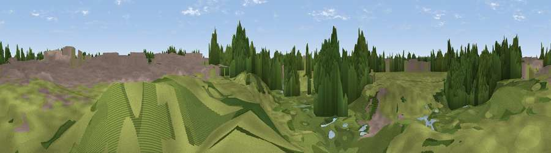

Olympic Rings
#44576 in England · top 66% of its area beats it · near WalthamstowThe view, rendered

A 360° render of this exact spot computed from the terrain model, tree cover and land cover — summer colours, afternoon light, calibrated against photographs of famous viewpoints. Real trees, hedges and buildings will differ in detail.
The panorama
Grey silhouette: terrain skyline in each direction (720 bearings, Earth curvature and refraction included). Dashed green: skyline with trees (+15 m) and buildings (+8 m) as obstacles. Blue strip: how far the ground is visible on each bearing.
Where the view opens
Wedge length = distance to the farthest visible ground on that bearing (vegetation-aware). Rings at 10, 25 and 50 km.
What fills the view
40% woodland · 31% grassland · 28% built-up
Angular shares of the visible panorama (visual magnitude), not map area. Landscape diversity 0.49 (0–1 Shannon).
Key numbers
More beautiful places nearby
The staircase of upgrades: each row has a higher view potential than everything closer. Driving times are estimates from straight-line distance, calibrated against real road routing — check an actual route before setting out.
| Place | Direction | Drive | Score |
|---|---|---|---|
| Viewpoint near Walthamstow | NW · 4 km | ~9 min | 24.4 |
| Beckton Alps | ESE · 6 km | ~13 min | 36.1 |
| Moon Hill | N · 7 km | ~15 min | 40.3 |
| Viewpoint near Greenwich | S · 8 km | ~16 min | 41.0 |
| Viewpoint near East Finchley | WNW · 9 km | ~18 min | 51.0 |
| Viewpoint near Wood Green | WNW · 9 km | ~18 min | 51.8 |
| Viewpoint near Eltham | SSE · 11 km | ~20 min | 52.2 |
| Viewpoint near Erith | ESE · 16 km | ~28 min | 54.3 |
51.54889, -0.01662 · source: osm peak · position refined by local search. Computed location — check access rights before visiting.